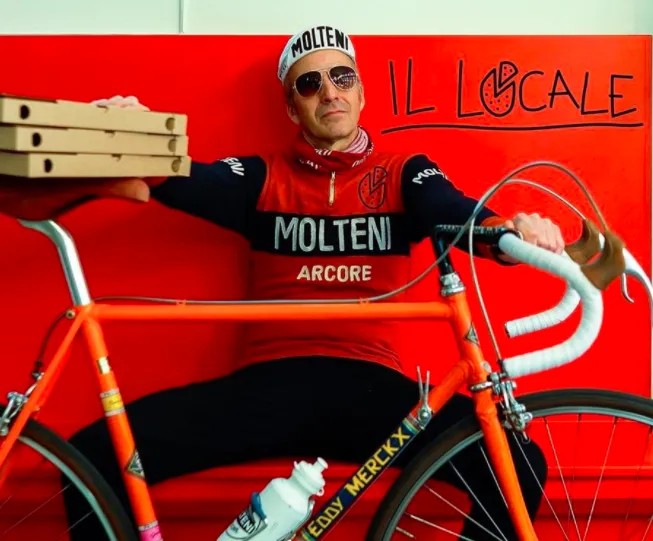
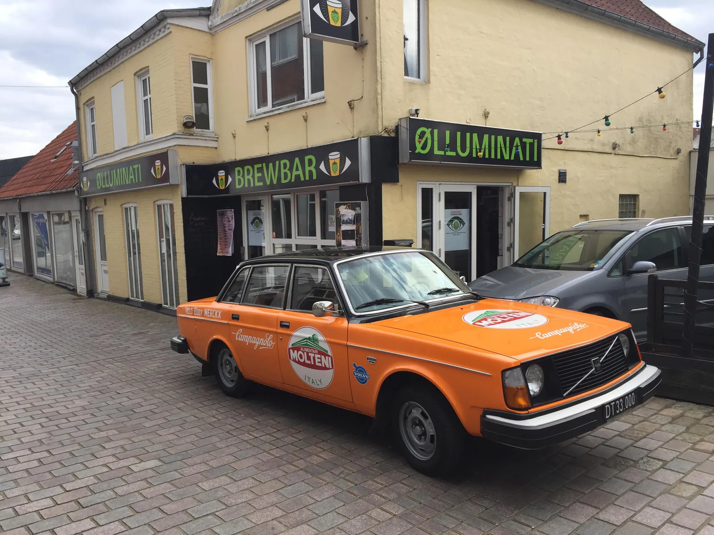
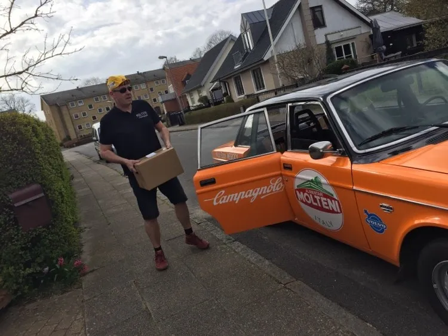
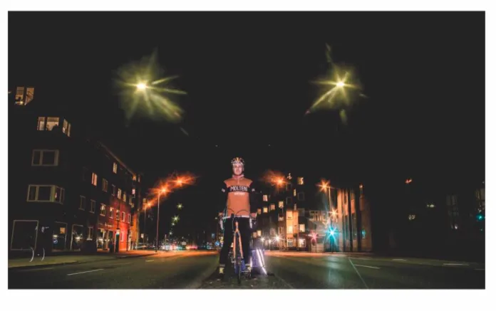

Holding out for a hero…

Tema – Lockdown: Når et samfund lukker ned, når små virksomheder skriger efter hjælp – træder Squadra Molteni til. Både i pedaler og i servicebil. Lars Munch Larsen og Klaus Maarup Kjærsgaard er hverdagens helte.
Where have all the good men gone
And where are all the gods?
Where’s the streetwise Hercules to fight the rising odds?
Isn’t there a white knight upon a fiery steed?
Il Locale – et lille kvalitetspizzaria i hjertet af Århus er i knæ. En kamp om overlevelse – og mod griske mafioso udbringningsfirmaer. Lars Munch Larsen træder til – og kører gratis ud med pizzaer. Cadeau og forza til Lars.


I need a hero
I’m holding out for a hero ‘til the end of the night
He’s gotta be strong
And he’s gotta be fast
And he’s gotta be fresh from the fight
Ølluminati – et lille specialbryggeri i Viborg, der knokler for at bringe øl ud til folket – og for at holde skruen i vandet. Klaus Maarup Kjærsgaard og den smukke Molteni Volvo træder til og kører gratis ud øl til folket. Cadeau og forza til Klaus.


I need a hero
I’m holding out for a hero ‘til the morning light
He’s gotta be sure
And it’s gotta be soon
And he’s gotta be larger than life!


Somewhere after midnight
In my wildest fantasy
Somewhere just beyond my reach
There’s someone reaching back for me
Racing on the thunder and rising with the heat
It’s gonna take a superman to sweep me off my feet


Lyrik: Bonnie Tyler, 1983